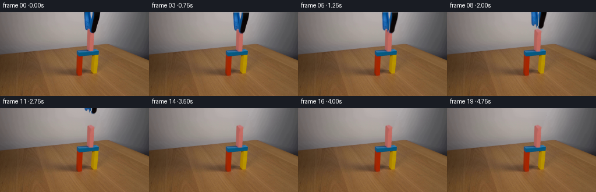
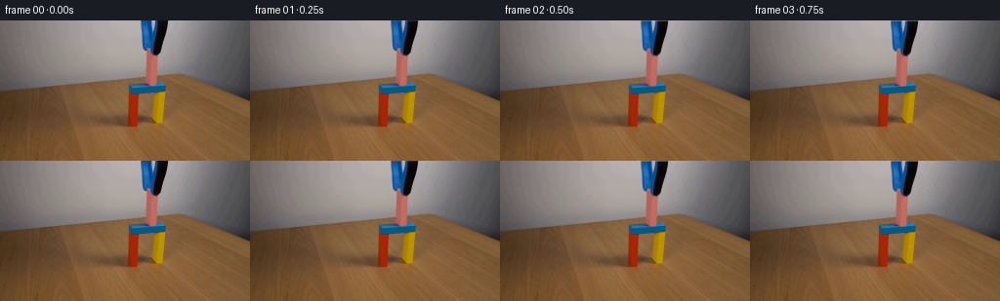
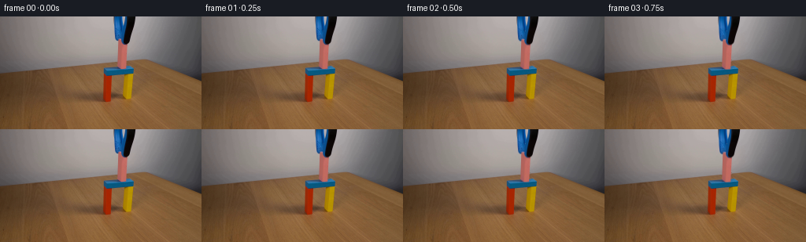

CODING AGENTS AS PIXEL WORLD MODELS
traex/GPT-6.1-Sol · 0172
点击播放 · 原生 RGB 像素
逐轮保存的候选
回放视频、检查图与代码变化。
每份候选均可单独播放。实际图片检查记录在下方工具轨迹中。
候选 01播放与检查图
点击播放 · 原生 RGB 像素


展开代码变化
--- 上一保存版本
+++ 本次保存版本
@@ -0,0 +1,154 @@
+from pathlib import Path
+import numpy as np
+from PIL import Image, ImageDraw
+import cv2
+from scipy.ndimage import distance_transform_edt, binary_erosion, gaussian_filter
+import artifact_io
+
+ROOT = Path(__file__).resolve().parent
+H, W = 144, 256
+S = 8
+Y, X = np.mgrid[:H, :W].astype(np.float32)
+
+
+def polygon(points):
+ im = Image.new('L', (W*S, H*S))
+ d = ImageDraw.Draw(im)
+ d.polygon([((x+.5)*S, (y+.5)*S) for x,y in points], fill=255)
+ return np.array(im.resize((W,H), Image.Resampling.LANCZOS), dtype=np.float32)/255
+
+
+def shifted(im, dx, dy, shear=0):
+ m = np.array([[1,shear,dx],[0,1,dy]], np.float32)
+ return cv2.warpAffine(im,m,(W,H),flags=cv2.INTER_LINEAR,borderMode=cv2.BORDER_CONSTANT)
+
+
+def ease(t):
+ t=np.clip(t,0,1)
+ return t*t*(3-2*t)
+
+
+def main():
+ original=np.array(Image.open(ROOT/'first_frame.png').convert('RGB'))
+ src=original.astype(np.float32)
+ # The static wall and tabletop seen on either side of the occluders.
+ backdrop=src.copy()
+ for y in range(70):
+ if y < 57:
+ left=np.median(src[y,137:143],axis=0)
+ right=np.median(src[y,174:180],axis=0)
+ for x in range(143,174):
+ u=(x-140.0)/36.5
+ backdrop[y,x]=left*(1-u)+right*u
+ elif y<64:
+ left=np.median(src[y,143:148],axis=0)
+ right=np.median(src[y,164:169],axis=0)
+ for x in range(148,163):
+ u=(x-146)/20
+ backdrop[y,x]=left*(1-u)+right*u
+ else:
+ left=src[y,148].copy()
+ right=src[y,161].copy()
+ if y==64:
+ left=src[y,147].copy()
+ for x in range(149,162):
+ u=(x-148)/13
+ backdrop[y,x]=left*(1-u)+right*u
+
+ # Complete the small portion of the rectangular pink block that is hidden
+ # by the two metal/plastic gripping fingers, using its visible perspective.
+ a=(150.05,29.15); b=(155.85,27.65)
+ c=(161.85,31.05); d=(155.35,33.70)
+ e=(148.95,63.55); f=(153.55,66.35); g=(159.65,65.65)
+ l=polygon([a,d,f,e])
+ front=polygon([d,c,g,f])
+ top=polygon([a,b,c,d])
+ shape=polygon([a,b,c,g,f,e])
+ rng=np.random.default_rng(1072)
+ noise=gaussian_filter(rng.normal(0,.75,(H,W)).astype(np.float32),.35)
+ model=np.zeros_like(src)
+ leftcol=np.stack([177.5-.06*(Y-35),99.1-.035*(Y-35),92.0-.025*(Y-35)],axis=-1)
+ frontcol=np.stack([196.7-.10*(Y-38),108.8-.08*(Y-38),99.9-.06*(Y-38)],axis=-1)
+ topcol=np.stack([193.5+.5*(X-154),117.0+.45*(X-154),118.2+.4*(X-154)],axis=-1)
+ denom=np.maximum(l+front+top,1e-6)
+ model=(leftcol*l[:,:,None]+frontcol*front[:,:,None]+topcol*top[:,:,None])/denom[:,:,None]
+ model+=noise[:,:,None]
+ # Very soft photographic edge rather than an unnaturally sharp drawn edge.
+ shape=gaussian_filter(shape,.24)
+ under=backdrop*(1-shape[:,:,None])+model*shape[:,:,None]
+
+ region=(X>=143)&(X<=173)&(Y<=36)
+ blue=(src[:,:,2]>src[:,:,0]+14)
+ dark=(src[:,:,0]<90)&(src[:,:,1]<80)
+ seed=region&(src[:,:,0]<137)&(blue|dark)
+ core=binary_erosion(seed,iterations=1,border_value=1)
+ # Nearest pure foreground colors provide an analytic RGB edge matte.
+ dist,inds=distance_transform_edt(~core,return_indices=True)
+ near=src[inds[0],inds[1]]
+ v=near-under
+ ta=np.sum((src-under)*v,axis=-1)/np.maximum(np.sum(v*v,axis=-1),1)
+ ta=np.clip(ta,0,1)
+ ta[core]=1
+ ta[(dist>2.8)|~region]=0
+ ta[ta<.055]=0
+ # Only the connected grabbing tool is removed; all gate pixels are retained.
+ clean=src.copy()
+ removed=ta>0
+ clean[removed]=under[removed]
+ tool=np.where(ta[:,:,None]>0,(src-(1-ta[:,:,None])*clean)/np.maximum(ta[:,:,None],1e-6),0)
+ tool=np.clip(tool,0,255)
+
+ # Preserve the actual surface texture and antialiasing of the pink block.
+ v=model-backdrop
+ pa=np.sum((clean-backdrop)*v,axis=-1)/np.maximum(np.sum(v*v,axis=-1),1)
+ pa=np.clip(pa,0,1)
+ near_shape=distance_transform_edt(shape<.1)<2.1
+ pa[~near_shape]=0
+ pink_seen=(src[:,:,0]-src[:,:,1]>43)&(np.abs(src[:,:,1]-src[:,:,2])<27)&(src[:,:,0]>142)
+ pa[(shape>.96)&pink_seen&~removed]=1
+ pa[removed]=shape[removed]
+ pa[pa<.025]=0
+ # Filled wall behind the block is used only for its subpixel final descent.
+ base=clean.copy()
+ base[pa>0]=backdrop[pa>0]
+ pink=np.where(pa[:,:,None]>0,(clean-(1-pa[:,:,None])*base)/np.maximum(pa[:,:,None],1e-6),0)
+ pink=np.clip(pink,0,255)
+ pink_pm=pink*pa[:,:,None]
+
+ left=(X < 156.55-.018*Y).astype(np.float32)
+ la=ta*left; ra=ta*(1-left)
+ lp=tool*la[:,:,None]; rp=tool*ra[:,:,None]
+
+ frames=[]
+ for i in range(20):
+ if i==0:
+ frames.append(original.copy())
+ continue
+ # Slow, controlled contact with the lintel, then release and lift.
+ settle=.55*ease(i/3)
+ opening=1.05*ease((i-3)/3)
+ liftvals=[0,0,0,0,0,.3,1.6,4.1,8.1,13.6,20.0,27.0,35.0,44,54,65,77,90,104,120]
+ dy=settle-liftvals[i]
+ ps=shifted(pa,0,settle)
+ pp=shifted(pink_pm,0,settle)
+ frame=base*(1-ps[:,:,None])+pp
+ # Fingers part slightly around their upper pivot as the grip releases.
+ for ap,premult,sgn in ((la,lp,-1),(ra,rp,1)):
+ sh=sgn*opening/35
+ aa=shifted(ap,0,dy,sh)
+ pm=shifted(premult,0,dy,sh)
+ # The source shaft is cropped at the top; extend that row only
+ # during the tiny downward placement travel.
+ if dy>0:
+ for yy in range(int(np.ceil(dy))):
+ weight=np.clip(dy-yy,0,1)
+ aa[yy]=np.maximum(aa[yy],ap[0]*weight)
+ pm[yy]=np.maximum(pm[yy],premult[0]*weight)
+ frame=frame*(1-aa[:,:,None])+pm
+ frames.append(np.clip(np.rint(frame),0,255).astype(np.uint8))
+ frames=np.stack(frames)
+ artifact_io.save(frames,ROOT)
+ np.savez_compressed(ROOT/'.tmp'/'layers.npz',tool_alpha=ta,pink_alpha=pa,clean=clean,base=base)
+
+if __name__=='__main__':
+ main()
候选 02播放与检查图
点击播放 · 原生 RGB 像素
展开代码变化
--- 上一保存版本
+++ 本次保存版本
@@ -20,7 +20,7 @@
def shifted(im, dx, dy, shear=0):
m = np.array([[1,shear,dx],[0,1,dy]], np.float32)
- return cv2.warpAffine(im,m,(W,H),flags=cv2.INTER_LINEAR,borderMode=cv2.BORDER_CONSTANT)
+ return cv2.warpAffine(im,m,(W,H),flags=cv2.INTER_LINEAR,borderMode=cv2.BORDER_REPLICATE)
def ease(t):
@@ -137,13 +137,6 @@
sh=sgn*opening/35
aa=shifted(ap,0,dy,sh)
pm=shifted(premult,0,dy,sh)
- # The source shaft is cropped at the top; extend that row only
- # during the tiny downward placement travel.
- if dy>0:
- for yy in range(int(np.ceil(dy))):
- weight=np.clip(dy-yy,0,1)
- aa[yy]=np.maximum(aa[yy],ap[0]*weight)
- pm[yy]=np.maximum(pm[yy],premult[0]*weight)
frame=frame*(1-aa[:,:,None])+pm
frames.append(np.clip(np.rint(frame),0,255).astype(np.uint8))
frames=np.stack(frames)
候选 03播放与检查图
点击播放 · 原生 RGB 像素

展开代码变化
--- 上一保存版本
+++ 本次保存版本
@@ -115,7 +115,7 @@
pink=np.clip(pink,0,255)
pink_pm=pink*pa[:,:,None]
- left=(X < 156.55-.018*Y).astype(np.float32)
+ left=(X < 156.7-.095*Y).astype(np.float32)
la=ta*left; ra=ta*(1-left)
lp=tool*la[:,:,None]; rp=tool*ra[:,:,None]
可观测工具轨迹
实际执行的命令与返回图片。
命令 1exit 0
/bin/bash -lc 'ls -la && cat prompt.txt && cat GENERATION_RULES.md'
命令 2exit 0
/bin/bash -lc "cat artifact_io.py && python - <<'PY'
from PIL import Image
import numpy as np
im=np.array(Image.open('first_frame.png'))
print(im.shape)
# color category map ascii 128x72
im=np.array(Image.open('first_frame.png').resize((128,72)))
for row in im:
s=''
for r,g,b in row.astype(int):
if min(r,g,b)>205:s+=' '
elif max(r,g,b)-min(r,g,b)<22:
s+= ('#' if r<65 else '+' if r<130 else '.' if r<205 else ' ')
elif r>g*1.25 and r>b*1.15:s+='R'
elif r>b*1.35 and g>b*1.15:s+='Y'
elif b>r*1.3 and b>g*1.12:s+='B'
elif g>r*1.14 and g>b*1.07:s+='G'
elif r>g*1.15 and b>g*1.05:s+='P'
else:s+='.'
print(s)
PY"命令 3exit 0
/bin/bash -lc "python - <<'PY'
from PIL import Image
import numpy as np
im=np.array(Image.open('first_frame.png'))
for y in range(0,83,2):
print('y',y, ' '.join(f'{x}:{tuple(im[y,x])}' for x in range(130,177,3)))
PY"命令 4exit 1
/bin/bash -lc "python - <<'PY'
from PIL import Image
import numpy as np
im=np.array(Image.open('first_frame.png')).astype(int)
print(' '+''.join(str(x//10%10) for x in range(140,176)))
print(' '+''.join(str(x%10) for x in range(140,176)))
for y in range(70):
s=''
for x in range(140,176):
r,g,b=im[y,x]
if r>145 and r-g>38 and abs(g-b)<25:c='P'
elif b-r>30 and b>g+18:c='B'
elif r<55 and g<55 and b<65:c='#'
elif max(r,g,b)-min(r,g,b)<22:c='.'
elif r>g+15 and g>b+18:c='t'
else:c='~'
s+=c
print(f'{y:03} {s}')
print('P bounds per y')
for y in range(27,69):
print(y, ' '.join(f'{x}:{\",\".join(map(str,im[y,x]))}' for x in range(148,164))))
PY"命令 5exit 0
/bin/bash -lc "python - <<'PY'
from PIL import Image
import numpy as np
im=np.array(Image.open('first_frame.png')).astype(int)
print(' '+''.join(str(x//10%10) for x in range(140,176)))
print(' '+''.join(str(x%10) for x in range(140,176)))
for y in range(70):
s=''
for x in range(140,176):
r,g,b=im[y,x]
if r>145 and r-g>38 and abs(g-b)<25:c='P'
elif b-r>30 and b>g+18:c='B'
elif r<55 and g<55 and b<65:c='#'
elif max(r,g,b)-min(r,g,b)<22:c='.'
elif r>g+15 and g>b+18:c='t'
else:c='~'
s+=c
print(f'{y:03} {s}')
print('P bounds per y')
for y in range(27,69):
print(y, ' '.join(f'{x}:{\",\".join(map(str,im[y,x]))}' for x in range(148,164)))
PY"命令 6exit 0
/bin/bash -lc "python - <<'PY'
import numpy as np
from PIL import Image
im=np.array(Image.open('first_frame.png')).astype(int)
print(' '+''.join(str(x//10%10) for x in range(125,178)))
print(' '+''.join(str(x%10) for x in range(125,178)))
for y in range(54,94):
s=''
for x in range(125,178):
r,g,b=im[y,x]
if r>145 and r-g>38 and abs(g-b)<25:c='P'
elif b-r>30 and b>g+18:c='B'
elif r>g*1.4 and g<70:c='R'
elif r>g*1.1 and g>b*2.5:c='Y'
elif max(r,g,b)-min(r,g,b)<22:c='.'
elif r>g+15 and g>b+18:c='t'
else:c='~'
s+=c
print(f'{y:03} {s}')
print('edge blue values y64')
for y in range(61,71):
print(y,' '.join(str(x)+':'+','.join(map(str,im[y,x])) for x in range(130,172,2)))
PY"命令 7exit 0
/bin/bash -lc "python - <<'PY'
import numpy as np
from PIL import Image
im=np.array(Image.open('first_frame.png')).astype(int)
for y in range(0,37):
row=im[y,140:175]
xs=np.flatnonzero((row[:,0]<125)&((row[:,2]>row[:,0]+12)|(row[:,0]<70)))+140
print(y,list(xs),[(int(x),','.join(map(str,im[y,x]))) for x in range(143,174) if ((x not in xs) and (im[y,x,0]<160))])
import scipy,cv2
print('scipy cv',scipy.__version__,cv2.__version__)
PY"命令 8exit 0
/bin/bash -lc "cat > generate.py <<'PY'
from pathlib import Path
import numpy as np
from PIL import Image, ImageDraw
import cv2
from scipy.ndimage import distance_transform_edt, binary_erosion, gaussian_filter
import artifact_io
ROOT = Path(__file__).resolve().parent
H, W = 144, 256
S = 8
Y, X = np.mgrid[:H, :W].astype(np.float32)
def polygon(points):
im = Image.new('L', (W*S, H*S))
d = ImageDraw.Draw(im)
d.polygon([((x+.5)*S, (y+.5)*S) for x,y in points], fill=255)
return np.array(im.resize((W,H), Image.Resampling.LANCZOS), dtype=np.float32)/255
def shifted(im, dx, dy, shear=0):
m = np.array([[1,shear,dx],[0,1,dy]], np.float32)
return cv2.warpAffine(im,m,(W,H),flags=cv2.INTER_LINEAR,borderMode=cv2.BORDER_CONSTANT)
def ease(t):
t=np.clip(t,0,1)
return t*t*(3-2*t)
def main():
original=np.array(Image.open(ROOT/'first_frame.png').convert('RGB'))
src=original.astype(np.float32)
# The static wall and tabletop seen on either side of the occluders.
backdrop=src.copy()
for y in range(70):
if y < 57:
left=np.median(src[y,137:143],axis=0)
right=np.median(src[y,174:180],axis=0)
for x in range(143,174):
u=(x-140.0)/36.5
backdrop[y,x]=left*(1-u)+right*u
elif y<64:
left=np.median(src[y,143:148],axis=0)
right=np.median(src[y,164:169],axis=0)
for x in range(148,163):
u=(x-146)/20
backdrop[y,x]=left*(1-u)+right*u
else:
left=src[y,148].copy()
right=src[y,161].copy()
if y==64:
left=src[y,147].copy()
for x in range(149,162):
u=(x-148)/13
backdrop[y,x]=left*(1-u)+right*u
# Complete the small portion of the rectangular pink block that is hidden
# by the two metal/plastic gripping fingers, using its visible perspective.
a=(150.05,29.15); b=(155.85,27.65)
c=(161.85,31.05); d=(155.35,33.70)
e=(148.95,63.55); f=(153.55,66.35); g=(159.65,65.65)
l=polygon([a,d,f,e])
front=polygon([d,c,g,f])
top=polygon([a,b,c,d])
shape=polygon([a,b,c,g,f,e])
rng=np.random.default_rng(1072)
noise=gaussian_filter(rng.normal(0,.75,(H,W)).astype(np.float32),.35)
model=np.zeros_like(src)
leftcol=np.stack([177.5-.06*(Y-35),99.1-.035*(Y-35),92.0-.025*(Y-35)],axis=-1)
frontcol=np.stack([196.7-.10*(Y-38),108.8-.08*(Y-38),99.9-.06*(Y-38)],axis=-1)
topcol=np.stack([193.5+.5*(X-154),117.0+.45*(X-154),118.2+.4*(X-154)],axis=-1)
denom=np.maximum(l+front+top,1e-6)
model=(leftcol*l[:,:,None]+frontcol*front[:,:,None]+topcol*top[:,:,None])/denom[:,:,None]
model+=noise[:,:,None]
# Very soft photographic edge rather than an unnaturally sharp drawn edge.
shape=gaussian_filter(shape,.24)
under=backdrop*(1-shape[:,:,None])+model*shape[:,:,None]
region=(X>=143)&(X<=173)&(Y<=36)
blue=(src[:,:,2]>src[:,:,0]+14)
dark=(src[:,:,0]<90)&(src[:,:,1]<80)
seed=region&(src[:,:,0]<137)&(blue|dark)
core=binary_erosion(seed,iterations=1,border_value=1)
# Nearest pure foreground colors provide an analytic RGB edge matte.
dist,inds=distance_transform_edt(~core,return_indices=True)
near=src[inds[0],inds[1]]
v=near-under
ta=np.sum((src-under)*v,axis=-1)/np.maximum(np.sum(v*v,axis=-1),1)
ta=np.clip(ta,0,1)
ta[core]=1
ta[(dist>2.8)|~region]=0
ta[ta<.055]=0
# Only the connected grabbing tool is removed; all gate pixels are retained.
clean=src.copy()
removed=ta>0
clean[removed]=under[removed]
tool=np.where(ta[:,:,None]>0,(src-(1-ta[:,:,None])*clean)/np.maximum(ta[:,:,None],1e-6),0)
tool=np.clip(tool,0,255)
# Preserve the actual surface texture and antialiasing of the pink block.
v=model-backdrop
pa=np.sum((clean-backdrop)*v,axis=-1)/np.maximum(np.sum(v*v,axis=-1),1)
pa=np.clip(pa,0,1)
near_shape=distance_transform_edt(shape<.1)<2.1
pa[~near_shape]=0
pink_seen=(src[:,:,0]-src[:,:,1]>43)&(np.abs(src[:,:,1]-src[:,:,2])<27)&(src[:,:,0]>142)
pa[(shape>.96)&pink_seen&~removed]=1
pa[removed]=shape[removed]
pa[pa<.025]=0
# Filled wall behind the block is used only for its subpixel final descent.
base=clean.copy()
base[pa>0]=backdrop[pa>0]
pink=np.where(pa[:,:,None]>0,(clean-(1-pa[:,:,None])*base)/np.maximum(pa[:,:,None],1e-6),0)
pink=np.clip(pink,0,255)
pink_pm=pink*pa[:,:,None]
left=(X < 156.55-.018*Y).astype(np.float32)
la=ta*left; ra=ta*(1-left)
lp=tool*la[:,:,None]; rp=tool*ra[:,:,None]
frames=[]
for i in range(20):
if i==0:
frames.append(original.copy())
continue
# Slow, controlled contact with the lintel, then release and lift.
settle=.55*ease(i/3)
opening=1.05*ease((i-3)/3)
liftvals=[0,0,0,0,0,.3,1.6,4.1,8.1,13.6,20.0,27.0,35.0,44,54,65,77,90,104,120]
dy=settle-liftvals[i]
ps=shifted(pa,0,settle)
pp=shifted(pink_pm,0,settle)
frame=base*(1-ps[:,:,None])+pp
# Fingers part slightly around their upper pivot as the grip releases.
for ap,premult,sgn in ((la,lp,-1),(ra,rp,1)):
sh=sgn*opening/35
aa=shifted(ap,0,dy,sh)
pm=shifted(premult,0,dy,sh)
# The source shaft is cropped at the top; extend that row only
# during the tiny downward placement travel.
if dy>0:
for yy in range(int(np.ceil(dy))):
weight=np.clip(dy-yy,0,1)
aa[yy]=np.maximum(aa[yy],ap[0]*weight)
pm[yy]=np.maximum(pm[yy],premult[0]*weight)
frame=frame*(1-aa[:,:,None])+pm
frames.append(np.clip(np.rint(frame),0,255).astype(np.uint8))
frames=np.stack(frames)
artifact_io.save(frames,ROOT)
np.savez_compressed(ROOT/'.tmp'/'layers.npz',tool_alpha=ta,pink_alpha=pa,clean=clean,base=base)
if __name__=='__main__':
main()
PY
python generate.py
python - <<'PY'
from PIL import Image
import numpy as np
s=np.array(Image.open('first_frame.png')).astype(int)
for i in [1,3,5,8,11,15,19]:
im=np.array(Image.open(f'frames/{i:02d}.png')).astype(int)
print('FRAME',i,'changed',np.count_nonzero(np.any(im"'!=s,axis=2)), '"'outside bounding',np.count_nonzero(np.any(im[:,0:142]"'!=s[:,0:142],axis=2)))
print('"' '+''.join(str(x%10) for x in range(142,175)))
for y in range(0,69,2):
st=''
for x in range(142,175):
r,g,b=im[y,x]
if r>145 and r-g>38 and abs(g-b)<25:c='P'
elif b-r>30 and b>g+18:c='B'
elif r<55 and g<55 and b<65:c='#'
elif max(r,g,b)-min(r,g,b)<22:c='.'
elif r>g+15 and g>b+18:c='t'
else:c='~'
st+=c
print(f'{y:02d} {st}')
PY"命令 9exit 0
/bin/bash -lc "python - <<'PY'
import numpy as np
from PIL import Image
z=np.load('.tmp/layers.npz')
ta=z['tool_alpha']; pa=z['pink_alpha']
s=np.array(Image.open('first_frame.png')).astype(float)
for y in [0,10,28,29,30,31,32,33,34,35,36,40,64,65,66,67,68]:
print('y',y,'ta',[(x,round(float(ta[y,x]),2)) for x in range(143,174) if ta[y,x]>.01])
print('pa',[(x,round(float(pa[y,x]),2)) for x in range(143,174) if pa[y,x]>.01])
PY"命令 10exit 0
/bin/bash -lc "python generate.py && python - <<'PY'
import numpy as np
from PIL import Image
s=np.array(Image.open('first_frame.png'))
f=np.array(Image.open('frames/19.png'))
for y in [0,15,28,32,34,36,55,60,64,67,72]:
print(y,' '.join(f'{x}:{tuple(map(int,f[y,x]))}' for x in range(143,174,3)))
frames=np.stack([np.array(Image.open(f'frames/{i:02}.png')) for i in range(20)])
print(frames.shape,frames.dtype,'identity',np.array_equal(frames[0],s))
print('adjacent changed pixels:',[int(np.sum(np.any(frames[i]"'!=frames[i-1],axis=-1))) for i in range(1,20)])
print('"'files')
PY
ls -lh pixels.npz index.html generate.py"命令 11exit 0
/bin/bash -lc "python generate.py && python - <<'PY'
import numpy as np
from PIL import Image
from pathlib import Path
p=np.load('pixels.npz')['pixels']
a=np.stack([np.array(Image.open(f'frames/{i:02d}.png')) for i in range(20)])
assert a.shape==(20,144,256,3) and a.dtype==np.uint8
assert np.array_equal(a[0],np.array(Image.open('first_frame.png').convert('RGB')))
assert p.shape==(144,256,20)
assert len(list(Path('frames').glob('*.png')))==20
print('Validated: 20 RGB frames, 256 Ã 144; exact original first frame.')
PY"保存候选 3 份；完成命令 11 次；可验证图片返回 0 张。原始 API 响应与完整日志保留在本地。